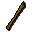
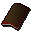
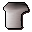
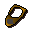
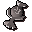

Goblin guard
| Config name | goblin_guard |
| NPC id | 489 |
| Combat level | 42 |
| Hitpoints | 43 |
| Attack / Strength / Defence | 32 / 37 / 37 |
| Respawn | 500 ticks |
| Options | Talk-to, Attack |
| Wander range | 0 tiles from spawn |
| Max range | 15 tiles from spawn |
| Defined in | scripts/quests/quest_itgronigen/configs/quest_itgronigen.npc |
| Bonuses | Attack bonus 8, Strength bonus 5, Stab def 4, Slash def 6, Crush def 6 |
Goblin guard
I will have to kill him to get past him.
Show all 1 spawn on the world map → Open in knowledge graph →
Drops
Drop script: scripts/drop tables/scripts/goblin.rs2 (specific handler)
Drop table
| Item | Quantity | Rarity | Notes |
|---|---|---|---|
| 5 | 9/64 (14.06%) | ||
| 6 | 3/64 (4.69%) | ||
| 7 | 5/128 (3.91%) | ||
| 1 | 5/128 (3.91%) | ||
 Bronze spear | 1 | 1/32 (3.12%) | members |
| 15 | 3/128 (2.34%) | ||
| 9 | 3/128 (2.34%) | ||
 Bronze sq shield | 1 | 3/128 (2.34%) | |
| 4 | 3/128 (2.34%) | ||
| 8 | 3/128 (2.34%) | ||
 Chef's hat | 1 | 3/128 (2.34%) | |
| 1 | 1/64 (1.56%) | ||
| 20 | 1/64 (1.56%) | ||
| 1 | 1/128 (0.78%) | ||
 Brass necklace | 1 | 1/128 (0.78%) | |
 Air talisman | 1 | 1/128 (0.78%) |
Tertiary drops
| Item | Quantity | Rarity | Notes |
|---|---|---|---|
| Clue scroll (easy) | 1 | 1/128 (0.78%) | members |
Locations
| Area | Coordinates | Level | Count | Map |
|---|---|---|---|---|
| Observatory (underground) | 2391, 9458 | 0 | 1 | view |
Dialogue
Goblin guardWhat are you doing here? This is our domain now. Begone foul human!
Quests
Referenced in scripts
scripts/drop tables/scripts/goblin.rs2scripts/quests/quest_itgronigen/scripts/goblin_guard.rs2scripts/quests/quest_itgronigen/scripts/quest_itgronigen.rs2